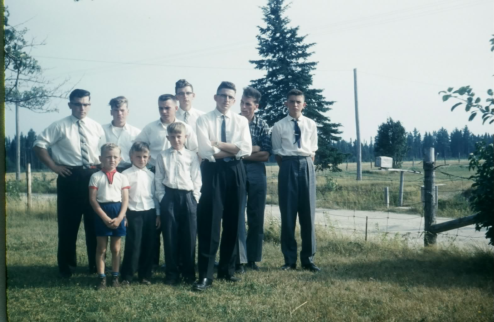
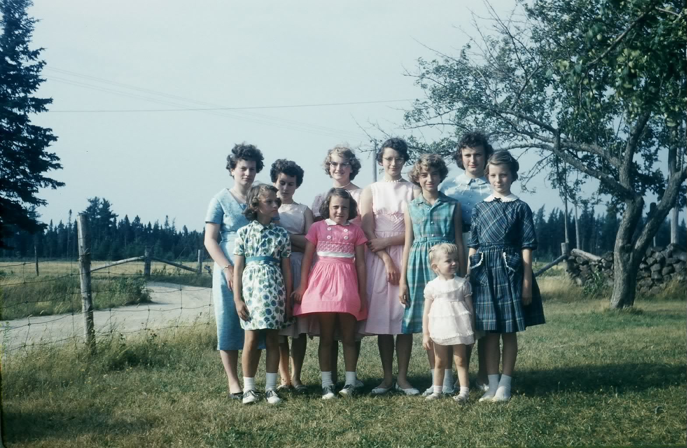

The Family Chronicle
No. 143 July 25, 2007
____________________________________________________________________


Some nephews and nieces taken at Little Branch presumably at a Mother’s Day gathering
Follow-up to smelt fishing
Glenn Russell tells me that bag nets were fished on both tides but box nets did not have to be fished as often. Glenn also said that fishermen had a devise that rested on the bottom with a string to a “bell” sitting on the ice. The rising tide caused a “clang” thereby alerting fishermen to dress, go out and haul their nets.
As Glenn remembered, fishermen used oil lanterns; he thought, however that later on his Dad had a gas lantern, perhaps a Coleman
Arthur Mills wrote I’ve “been there and done that”; it “brought a tear to my eye. What a hard way to make a living. My Dear Dad and Uncle Bert would leave Monday morning return on Saturday, an exercise they carried out for years. I am more than grateful to Mother for never encouraging me to get involved.”
Gum boots
Herb Curtis has written a number of books set in the Miramichi. I am just starting to read The Last Tasmanian and it he mentions gum boots; I remember them well. They were the common winter boot.
I wore gum boots, it seems forever. They were made of rubber over canvas, like a rubber boot, only a gumboot was only ankle high and laced where as a rubber boot went to the knee. Low enough so that the snow went over the top and down into the boot making for wet feet and, at the end of the day, stinking feet. Fortunately we had a furnace in our house and boots dried out over night.
Neither rubber boots not gumboots offered much protection from the cold; thick woolen socks, or perhaps even two, plus felt insoles helped. As I recall, our rubber boots had red trim but I cannot remember if that applied also to gum boots.
Some communities, I am told, held an annual celebration called Gumboot Day. One of the competitions was to see how high or how far one could throw a gumboot. To the best of my knowledge, that kind of event was not held in Black River.
Number one and number two
Some readers may recall school days during which one raised one’s hand for permission to go to the toilet – there was no bathroom but there was an outhouse perched on the edge of the bank overhanging the cove. Why it was important for the teacher to know the particular toilet function, I do not know but we signaled our intention by holding up either one or two fingers.
One finger indicated the need to “pee’ (The Number One function) while two fingers indicated the need to “dump” (the Number Two function).
I recall also when working in the Miramichi area, it was not uncommon to say “I have to see a man about a horse” which translated into the need to go to the toilet. I wouldn’t be surprised if some of the old timers in Black River still use the expression.
Slow moving
We all move at different speeds. A slow person was said to be “slow as cold molasses”; an even slower person was sometimes described as “Slow as cold molasses moving up hill in January”. That was very slow, indeed.
The “makins”
Most smokers I knew rolled their own cigarettes. One needed a package of tobacco and a package of papers; together they were the “makins”. A paper would be removed from the package, bent slightly and held in one hand. A pinch of tobacco would be removed from the package, spread the length of the paper then the paper with the tobacco was rolled making a cigarette. The loose end of the paper was wet slightly by the tongue and gently pushed against the rolled cigarette ensuring that the cigarette would stay rolled. Any loose tobacco at either end was removed and put back in the package.
The Family Chronicle (Copyright) is an occasional newsletter published by Don Glendenning and posted on the family website. It is intended to share information about my family, community and the times in which I grew up. While every effort is made to be accurate, errors are likely to occur. Comments, enquiries and information may be sent to 62 Queen Elizabeth Drive, Charlottetown, PEI, C1A 3A9. Tel: 902 892 5859. Email: don@glendenning.net Web: www.glendenning.net/don